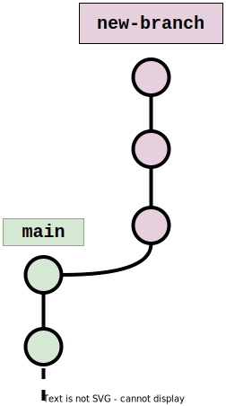
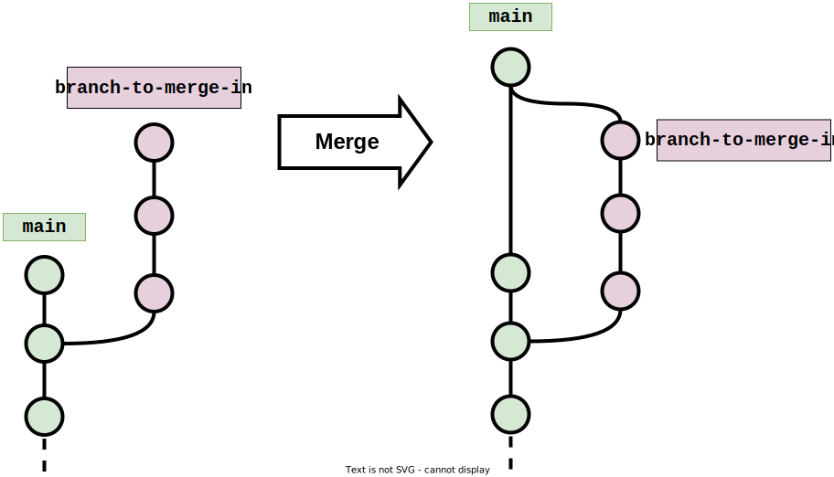

Working with Local Branches#
Learning objectives#
Explain the concept of branches in Git and how they are used in version control
Create a new branch in a local Git repository
Switch between branches using the
git checkoutcommandAdd and commit changes to a branch
Merge changes from one branch into another
View and list branches in a local Git repository
Repository files#
We’ve had quite a lot of episodes working on our git-good-practice repository.
We’ve included here copies of the files that we will build on from this episode
onwards. If you haven’t been following along with all the examples or exercises,
we suggest updating the files in your repository with the contents of one of
the following archives:
As a Zip archive: git-good-practice.zip
As a Tar archive: git-good-practice.zip
You should place the archive contents in your own git-good-practice repository
(note: make sure to preserve the directory structure: the file
Commit-good-practice.md should be placed in the subdirectory
Good-practice-guides of the repository root folder). Then commit the changes
to main and use git push to update your remote repository.
Concept of branches#
Git branches are a core feature of the Git version control system. They allow you to create multiple lines of development within a single repository, allowing you to work on multiple features or fixes simultaneously, without affecting the main codebase.
In simple terms, a branch is a separate series of commits of the codebase that diverges from the main codebase. You can think of it as a separate timeline of changes that runs in parallel with the main timeline. Each branch contains a copy of the entire codebase, with its own set of changes.

Git branches are incredibly useful for collaborative development, as they allow multiple developers to work on different features or fixes simultaneously, without stepping on each other’s toes. They also provide a way to experiment with new features or ideas without affecting the stability of the main codebase.
Working with local branches#
We’re going to add some new content to the cheatsheet, doing this in a new, dedicated branch. The content we’ll add will be about using branches, so we’ll be recording what we learn as we go. The material on branches in this episode concerns working with local branches: branches that are created in our local repository, rather than remotely on GitHub. The next episode will look at remote branches in more detail.
Creating branches#
The general way to create a new branch in our local repository is:
git branch <new-branch-name>
where <new-branch-name> is the name of the branch we wish to work on.
When you create a new branch, you can specify the starting point. By default, if you do not specify a
starting point, Git will create the new branch at the HEAD commit.
The HEAD is a reference to the current commit in the branch you are currently working on. It is essentially a pointer
to the tip of the branch you have checked out, which can be moved to any commits in the branch.
When you create a new branch at the current commit, Git creates a new branch pointer that points to the same commit as
the HEAD. This means that the new branch initially has the same code as the current branch, but it is a separate branch
that can be modified independently.
It can be helpful to have a dual picture in your mind when it comes to branches, thinking of them both as a series of commits and also a pointer to a particular commit.
Branching off a commit#
You can create a new branch at any commit in the repository’s history. This can be useful if you want to create a new branch based on a specific version of your code, or if you want to experiment with changes from a previous commit without affecting the current branch. Here’s how you can create a new branch at any commit:
Identify the commit you want to create the branch at: Use the
git logcommand to view the commit history of the repository and find the commit identifier of the commit you want to create the new branch at.Create a new branch: Use the
git branchcommand with the commit identifier to create a new branch at that commit:
git branch <new-branch-name> <commit-identifier>
For example, to create a new branch called experimental-branch based on a commit with the identifier abc1234, you would run:
git branch experimental-branch abc1234
This creates a new branch called experimental-branch at the specified commit.
In our example, we create a new branch
off of our most recent commit, called branches-material:
$ git branch branches-material
This will shortly be the branch in which we add new content to the cheatsheet.
Viewing branches#
We can view all the local branches we have in our local repository by running:
git branch --list
(Equivalently, we could use the short form -l for --list.)
In our git-good-practice repository, this would show us:
$ git branch --list
branches-material
* main
The asterisk (*) preceding “main” is used to indicate the currently checked out branch in your local repository.
Another way to find out which branch you have checked out is to run git status.
main is just a branch#
The main branch in Git is simply a branch like any other branch in your repository, created automatically to hold the initial commit of the repository’s history. Because the main branch is created automatically and is the default branch, it is often used as the primary branch for a project’s development. However, you can choose to rename the main branch or use a different branch as the primary branch if you prefer.
Adding commits to a branch#
In order to work on a branch, we need to checkout the branch so that any new commits we make are added to the branch. The general command for doing this is:
git checkout <branch>
Branching off a branch#
There is nothing stopping us from creating a new branch that starts on a different branch to main. For example, suppose you have checked out a branch called feature-branch, and you want to create a new branch called bugfix-branch on top of feature-branch. If you do not specify a starting point for the new branch, Git will create it at the current commit on feature-branch, i.e. the commit that HEAD is pointing to.
We now switch to our new branch branches-material so that
our new cheatsheet content will feature in this branch, rather than the branch
main:
$ git checkout branches-material
Switched to branch 'branches-material'
We’re now ready to get to work in the branch branches-material. We add the
following content to Git-cheatsheet.md on what we just learned about creating
a branch.
## Branches
`git branch <branch>` — Create a new local branch called `<branch>` based at the
current commit (i.e. at `HEAD`).
We make a commit with the new change:
$ git add Git-cheatsheet.md
$ git commit -m "Add entry about creating branches"
[branches-material 8124186] Add entry about creating branches
1 file changed, 6 insertions(+)
We next add an entry to our cheatsheet about checking out a branch:
`git checkout <branch>` — Check out the branch `<branch>`, so that new commits
are added to `<branch>`.
Having committed this change, we now view the log to see our new commits:
$ git log --oneline -5
51da8da (HEAD -> branches-material) Add entry about checking out a branch
8124186 Add entry about creating branches
42a9a32 (origin/main, origin/HEAD, main) Ignore TODO list file
0984d2b Add material on basic pathspec usage (directories)
92b2ac2 Create general good practice guides directory
We can see that the new commits have been added to the branch branches-material
and that we are now working on branches-material as indicated by
HEAD -> branches-material. We can also see that commits to main stop at
commit 42a9a32 shown by origin/main, origin/HEAD, main.
We can verify that these new commits are not on the main branch by examining
the log of main directly. In general, we can run
git log [options] <branch>
to view the commit history contained in a specific branch <branch>, where
[options] are any optional arguments we want to include e.g --oneline. In
our example, we get the following history for the main branch:
$ git log --oneline -5 main
42a9a32 (origin/main, origin/HEAD, main) Ignore TODO list file
0984d2b Add material on basic pathspec usage (directories)
92b2ac2 Create general good practice guides directory
5cf8321 Remove rubbish.txt
d26a698 Add some rubbish to try out 'git rm'
This confirms that the new commits are not on the main branch.
Merging branches#
Let’s now look at how we can incorporate the changes we’ve made in the
branches-material branch into our main branch. In Git parlance, we want
to merge the commit history in branches-material into the history of
the main branch.
Merging is a way to bring together different streams of development and integrate them into a cohesive whole. This is the key to using Git for collaboration, as it allows multiple developers to work on different aspects of a project simultaneously and then collate their changes.
We do this with the merge command:
git merge <branch-to-bring-in>
Here, <branch-to-merge-in> is the name of the branch whose commits we want
to bring into the branch we’re currently on.

In our example, we need to merge the branch branches-material into main.
To do this, we need to checkout the branch we want to merge into, i.e.
main:
$ git checkout main
Switched to branch 'main'
Your branch is up to date with 'origin/main'.
Now we can merge branches-material into main:
$ git merge branches-material
Updating 42a9a32..51da8da
Fast-forward
Git-cheatsheet.md | 9 +++++++++
1 file changed, 9 insertions(+)
Let’s take another look at the log of main:
$ git log --oneline -5
51da8da (HEAD -> main, branches-material) Add entry about checking out a branch
8124186 Add entry about creating branches
42a9a32 (origin/main, origin/HEAD) Ignore TODO list file
0984d2b Add material on basic pathspec usage (directories)
92b2ac2 Create general good practice guides directory
We can see that the commits from branches-material have been added to
main. In fact, Git has just moved main to now point to the same commit
as at the end of the branches-material, as seen by the line
51da8da (HEAD -> main, branches-material) Add entry about checking out a branch
Our main branch now has some commits that have not been pushed to the remote
repository, so we will now rectify that:
$ git push
Username for 'https://github.com': jbloggs9999
Password for 'https://jbloggs9999@github.com':
Enumerating objects: 8, done.
Counting objects: 100% (8/8), done.
Delta compression using up to 8 threads
Compressing objects: 100% (6/6), done.
Writing objects: 100% (6/6), 765 bytes | 255.00 KiB/s, done.
Total 6 (delta 4), reused 0 (delta 0), pack-reused 0
remote: Resolving deltas: 100% (4/4), completed with 2 local objects.
To https://github.com/jbloggs9999/git-good-practice.git
42a9a32..51da8da main -> main
Exercise#
Add another commit to the branches-material branch about merging branches.
You may wish to use the following text:
`git merge <branch-to-merge-in>` — Combine the commit history of `<branch-to-merge-in>`
with that of the branch currently checked out.
Once you’ve done that, bring the changes into main by merging the branch
branches-material into main. Finally, push the new commits on main to the
remote repository.